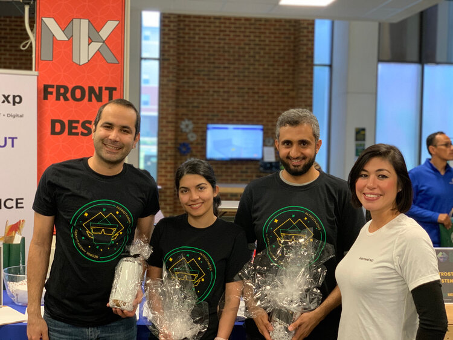

Nov 1, 2020
The FSE presentation and the teaser of our paper RulePad: Interactive Authoring of Checkable Design Rules is now available.
I am a third-year Ph.D. student in Computer Science at the George Mason University under supervision of Dr. Thomas LaToza in Developer Experience Design Lab.
My research is studying the barriers developers face when working with design decisions and examine possible solutions. I am exploring approaches to help developers document their decisions with minimum overhead and maximum benefits!

Good documentation has long been argued to be key to helping developers write code more quickly and consistently with design decisions, but is left largely disconnected from code. We propose a method for active documentation, where design decisions are made explicit as design rules and checked against code. Developers can discover how to follow a design rule by navigating to examples in their codebase. After editing code, developers receive immediate feedback about which design rules are satisfied and which are violated, notifying developers who miss design decisions about the existence of these design decisions.
Sahar Mehrpour, Thomas D. LaToza, Rahul K. Kindi.
Good documentation offers the promise of enabling developers to easily understand design decisions. Unfortunately, in practice, design documents are often rarely updated, becoming inaccurate, incomplete, and untrustworthy. A better solution is to enable developers to write down design rules which may be checked against code for consistency. But existing rule checkers require learning specialized query languages or program analysis frameworks, offering a barrier to writing project-specific rules. We introduce two new authoring techniques for design rules: snippet-based authoring and semi-natural-language authoring. In snippet-based authoring, developers specify characteristics of elements to match by writing partial code snippets. In semi-natural language authoring, a textual representation offers a representation for understanding design rules and resolving ambiguities, which is bidirectionally synchronized. We implemented these approaches in RulePad.
Sahar Mehrpour, Thomas D. LaToza, Hamed Sarvari.
DOI,
Pre-Print,
Replication Package
Tool Demo
Demo (video),
Teaser (2-minute video),
Presentation (17-minute video)
The FSE presentation and the teaser of our paper RulePad: Interactive Authoring of Checkable Design Rules is now available.
Our paper RulePad: Interactive Authoring of Checkable Design Rules is accepted at ESEC/FSE 2020.
Emad, Abdulaziz and I participated in PatriotHacks and won the first place in Informed XP challenge!
I attended the VL/HCC 2019 at Memphis, TN and presented my paper Active Documentation: Helping Developers Follow Design Decisions. Slides
Our paper Active Documentation: Helping Developers Follow Design Decisions will appear in VL/HCC 2019.
I have participated in many research projects and course projects. Here is the list of my favorite ones.
This is a project is advised by Alexander Lex at the Scientific Computing and Imaging Institute at the University of Utah. I had a privilege to work on this project for one semester (Spring 2017). In this IRB-approved project, we tried to present a visualization of clinical data of patients. The target audiences for this visualization are medical doctors.
Custom Framework Phovea, TypeScript, Python, D3js, scikit-learn Python packages, CSS.
Collaborators: Navid Farhoudi
This project was done as a course project for Topological Data Analysis course at the University of Utah (Spring 2016). In this project, we present a visualization of ensemble vector fields taken from International Research Institute for Climate Society. In this project, we displayed flow, vector magnitude and Merge Tree of each ensemble.
JavaScript, D3js HTML, CSS
Collaborators: Tamara Denning, Aniqua Baset
The conferences on Security and Privacy contain a lot of information. In this project we tried to visualize the topic modeling data in 4 different conferences in 30 years. The data is prepared by Aniqua Baset at the University of Utah (Fall 2016).
JavaScript, D3js, HTML, CSS
This project is done as a course project for Machine Learning course at the University of Utah (Fall 2016). The data in this project is labeled Android Applications and we wanted to detect Malware applications using classifiers. We implemented the well-known classifiers from scratch: ID3 (Decision Tree), Stochastic Gradient Descent For Least Squares, Perceptron, Balanced Winnow, SVM (Support Vector Machine), Linear Regression, Random Forest, AdaBoost.
Python
Collaborators: Sunipa Dev, Zahra Fahimfar, Siddartha Ravichandran
This project is done as a course project for a Visualization course at the University of Utah (Fall 2016). MovieMiner is an interactive visualization for helping users filter and select desirable movies from more than 5000 movies.
JavaScript, D3js, HTML, CSS
Collaborators: Yeganeh Bahoo, Stephane Durocher, Andrea Bunt
In this project we used Microsoft Kinect™ for Graph Drawing. We developed an application in which users can draw 2D graphs using body gestures. This project was a course project for HCI course at the University of Manitoba. We implemented the application in C# and used the information of skeleton detection for graph drawing.
C#, Microsoft Kinect™
Room 4404, Engineering Building, George Mason University, Fairfax, VA